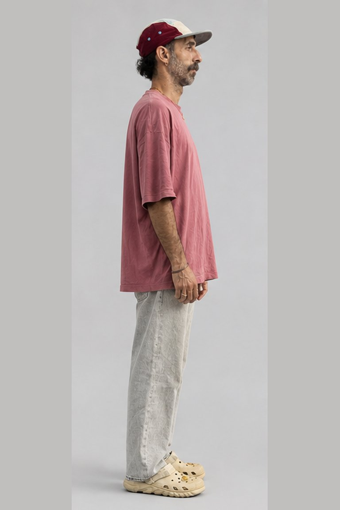
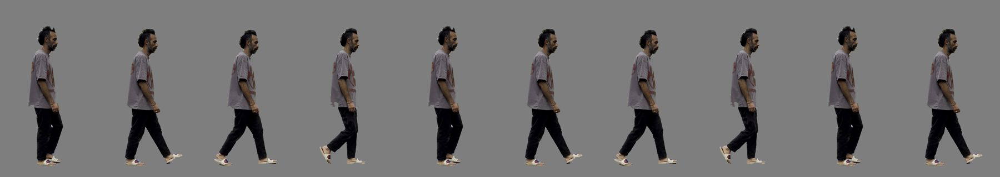
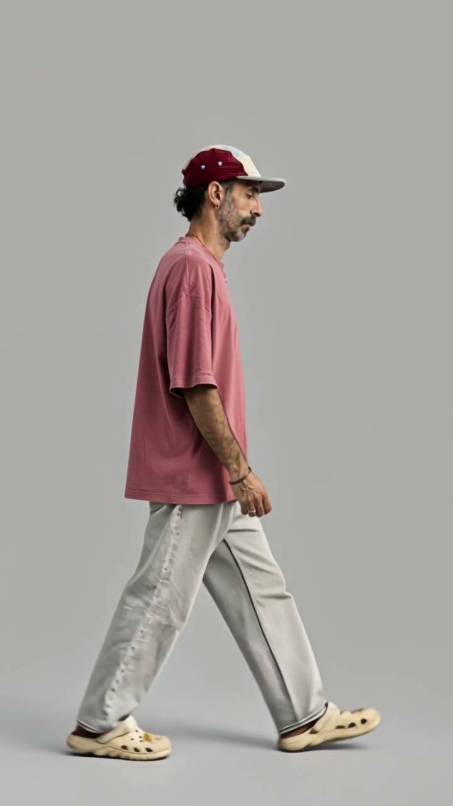

The walk: four routes
Researched in Blender, After Effects and every Plnty tool. Today: your full video failed in Kling twice (refunded, balance 4,839). Kling Omni only worked with a big, centred figure walking in place.
A. Plnty wan-3-reference (your B + your full video)

- One continuous 10 to 15 s clip, nothing loops, so no shoulder jump
- Image 1 = your locked character, Video 1 = your real walk, prompt: moves like Video 1
- Copies the feel of your walk, not your exact step [Likely]
- Face and clothes can drift over 15 s
Card: 10 s = 150, 15 s = 225, plus a few credits for the reference video seconds [Likely]. All in Plnty, today.
B. Blender: your real step as a 3D loop, then Plnty paints the character on

- Keeps YOUR step exactly: pose tracked from your 62 clean frames
- A 3D rig has no posture drift, so a two step loop closes at zero. The shoulder cannot jump
- 1 to 2 days of local work first (free), then one Plnty restyle (Playblast source)
- Restyle must hold the character on a mannequin [Likely fine, Kling did it today]
Credits: 126 to 174 for the restyle. Blender 5.1 is installed.
C. After Effects

- Best as the final compositor for every route: the four worlds, parallax, foreground wipes, shadow. Free and scriptable
- As the walk itself (cut out puppet): 3 to 5 days and it loses the photo real look. Not recommended
- Patching today's loop: 36 joins in 18 steps, only 3 can hide behind the wipes
Credits: 0.
D. Reshoot 15 to 20 s of you walking (treadmill or tripod far away)
- Your exact walk, fully natural, no loop anywhere
- Needs 5 minutes of you on camera, and Kling still failed today on a small figure crossing the frame, so frame it big and centred
Credits: about 252 for 10 s in Kling after the shoot.
Your pick
My recommendation: A now as a fast test (10 s, 150), and B in parallel as the sure way to your exact step. C finishes either one.